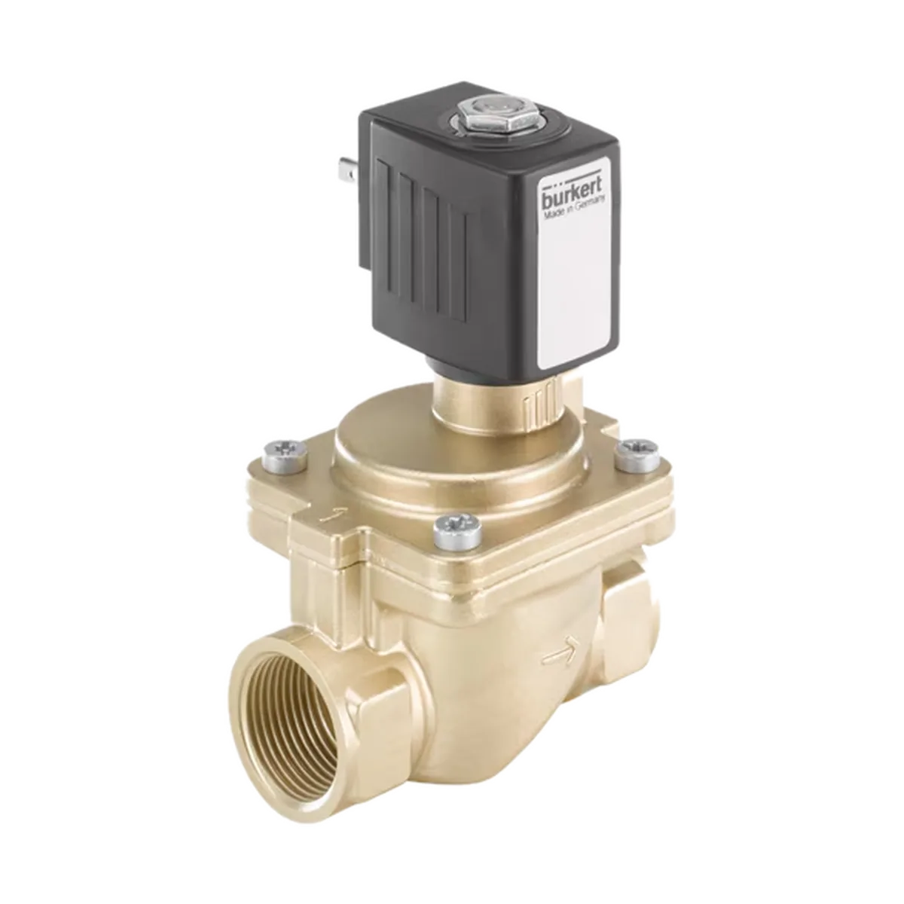

Zawory elektromagnetyczne
Zawory elektromagnetyczne Bürkert
Zawory elektromagnetyczne Bürkert do sterowania przepływem cieczy i gazów w instalacjach przemysłowych oraz układach automatyki.

Najważniejsze zastosowania i cechy
Serwokontrol pomaga w doborze produktów Bürkert do konkretnych warunków pracy: medium, ciśnienia, temperatury, zakresu przepływu, przyłącza, materiału wykonania oraz sposobu sterowania.
- Wersje bezpośredniego i pośredniego działania
- Rozwiązania dla cieczy, gazów i mediów agresywnych
- Szeroki zakres napięć, materiałów i przyłączy